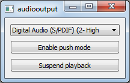

Audio Output Example
Audio Output demonstrates the basic use cases of QAudioOutput.

This example provides a tone generator to supply continuous audio playback. The first button allows pause and resume of the playback, and the second button allows toggling between push and pull modes of operation.
Running the Example
To run the example from Qt Creator, open the Welcome mode and select the example from Examples. For more information, visit Building and Running an Example.
Files: